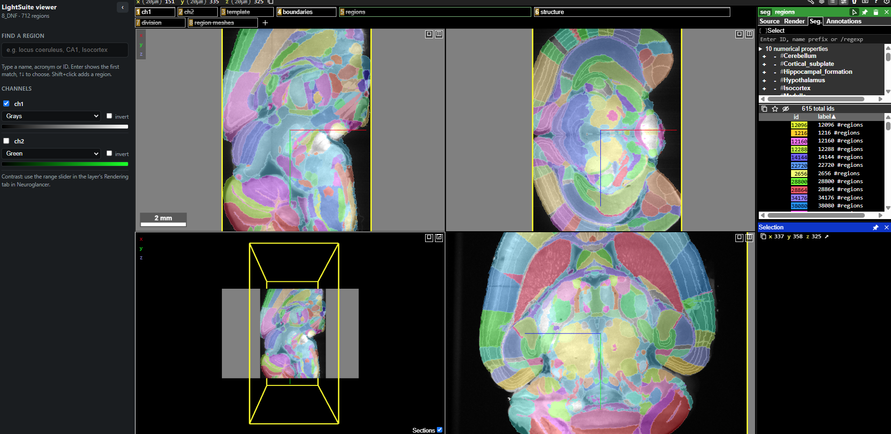

How to look at a registered brain (or spinal cord), check the registration, find regions and read their statistics. For installation, see the installation guide.
volume_registered\sample_space\. A parent folder also works: if it contains several results, you choose one.
lightsuite-neuroglancer D:\brain8_analysed\8_DNF_atlasedrun_viewer.bat and pick the folder, or drop the folder onto it. region names from: Allen membership (...)The next time you open the same brain it starts in seconds. The converted data is
kept in <results>\neuroglancer\.

structure level shown over ch1. Click to enlarge.| Part | Where | What it does |
|---|---|---|
| Side panel | left | Find a region. Channel visibility, LUT and invert. Hide it with ‹. |
| Layer bar | top | One numbered entry per layer. A |
| Views | middle | Three slice views and one 3D view. The scale bar is bottom left. |
| Layer settings | top right | Tabs of the selected layer: Source, Render/Rendering (colours, contrast), Seg. (region list, tags and statistics). |
| Selection panel | bottom right | Mouse position, and the names and statistics of the region under the mouse or of the pinned region. |
Start with another layout using --layout xy (or yz, xz, 3d).
| Layer | What it is | At start |
|---|---|---|
ch1, ch2, … | Your sample channels. | ch1 shown |
template | The atlas reference image, warped onto your sample. | hidden |
boundaries | White outlines of the atlas regions. | shown |
| hierarchy levels | One layer per level of the atlas, from fine to coarse (e.g. Allen substructure, structure, division, category; BrainGlobe and spinal cord atlases: regions, depth 3, …). | finest shown |
| extra labels | E.g. spinal cord segments. | hidden |
region meshes | 3D surfaces of the regions. | whole brain/cord |
Do this first for each new brain, before you trust any region statistic.
ch1 and boundaries shown. Scroll through the slices in each view.
The outlines should follow visible anatomy: the brain surface, ventricles, the corpus callosum,
the hippocampus, the cerebellum.template layer and switch it on and off. Its anatomy should line up with your sample's.locus coeruleus), an acronym (CA1)
or an atlas ID (147). Small typos, accents and British spellings are fine.
Matches marked similar are guesses, so check the name.Which level you click on matters. With the finest level shown you select a small region
(e.g. a cortical layer). Show a coarser level layer (e.g. division) and hide the finer one to select larger
regions.
The statistics are the ones LightSuite computed. The viewer does not compute any. Hover over a statistic's name in the Selection panel to see which file it comes from.
| Name pattern | Meaning | Example |
|---|---|---|
| no prefix, no side | From registration_analysis/region_metrics.csv. Available at every hierarchy level. | volume_mm3, mean_intensity, positive_percent |
…_left / …_right | Measured in sample space, per hemisphere (stats/region_stats_sample.csv). Finest level only. | median_intensity_left |
atlas_… | Measured in atlas space (stats/region_stats.csv). E.g. atlas_volume_mm3_left is the volume of the atlas region, not of your sample. | atlas_volume_mm3_left |
…_ch1, …_ch2 | The value for that channel (only when there are several channels). | mean_intensity_ch2 |
#, e.g. #Isocortex lists all isocortex regions at that level.region meshes layer this shows their 3D surfaces.Contrast and LUT only change the display. They never change the statistics, which were computed by LightSuite from the original data.
region meshes layer: at start, the whole brain or cord.--layout 3d, or change the layout in Neuroglancer.--no-meshes, there are no surfaces. Run again without it (the conversion
is redone, including meshes).If you imaged a region of interest at higher resolution with the LightSuite multires workflow, you can show it inside the whole brain:
lightsuite-neuroglancer D:\data\brain_atlased --zoom D:\data\brain_multires_resultsgreencells 488), at its native resolution, under the atlas outlines.--zoom can be given several times for several ROIs. The first conversion needs about 1.15× the raw TIFF size on disk.| You see | Meaning |
|---|---|
| Orientation is not the usual atlas one | The data is shown on the registration grid, the same way as LightSuite's QC overlays. This is intended. |
label N (not in atlas) | A label value in the annotation that the atlas ontology does not list. |
| Region names are only numbers or short | No atlas ontology was found. Install the atlas or use --atlas-dir, then run with --reexport (see troubleshooting). |
| A region has no statistic | LightSuite did not measure it (or it is empty). It is not zero. |
| Blocky edges when zoomed in | The atlas is on the registration grid (e.g. 20 µm voxels). |
| A level layer looks the same as the next one | For many regions the region and its parent are the same at that depth of the atlas tree. |
--reexport after you install an atlas or change the sample's config file. Changes to the
registration files themselves are detected automatically.<results>\neuroglancer\ at any time. It is rebuilt on the next run.127.0.0.1). To show a brain to someone on another PC, they install the tool and open a copy of the results.| Action | How |
|---|---|
| Show / hide a layer | Click its name in the layer bar, or press its number key |
| Open a layer's settings | Ctrl+click its name in the layer bar |
| Change slice | Mouse wheel in a slice view |
| Zoom | Ctrl+wheel |
| Pan / rotate (3D) | Drag |
| Region name and statistics | Hover; Selection panel (bottom right) |
| Isolate and pin a region | Double-click (again: show all; on background: unpin) |
| Pin without isolating | Ctrl+right-click |
| Find a region | Side panel, type, Enter; ↑↓ to choose |
| Add a region to the highlight | Shift+click or Shift+Enter |
| Clear the search box | Esc |
| All Neuroglancer shortcuts | H |
| Stop the viewer | Ctrl+C in the terminal |
Command-line options and fixes for common problems are in the installation guide.